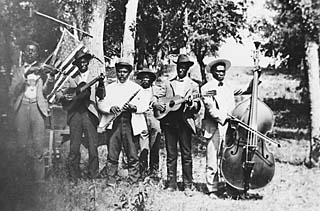

|
Juneteenth is an annual African-American celebration commemorating the
1865 abolition of slavery in Texas.
Though cut off from the rest of the South in 1863, much of Texas
remained unoccupied by Union troops until Union General Gordon Granger
arrived at Galveston, Texas, 10 weeks after Lee's surrender. On June
19, 1865, Granger issued General Order No. 3, declaring: "The people of
|

A Juneteenth celebration.
|
Texas are informed that all slaves are free. This involves an absolute
equality of rights of property between masters and slaves and the
connection heretofore existing between them becomes that between
employer and free laborer." Thus, two and a half years after Lincoln
issued the Emancipation, Granger made it the law in Texas.
As word of Granger's order spread, African-Americans joined in
spontaneous celebration of "Juneteenth." Beginning in 1866, the
anniversary of Juneteenth became an occasion for picnics, baseball
games, family reunions, and other revelry. By the turn of the 20th
century, Juneteenth celebrations also featured prayer services and
oratory. Speakers typically urged celebrants to dedicate themselves to
education and spiritual uplift.
As late as the 1930s, tens of thousands of people participated in
Juneteenth celebrations across Texas. With the number of former slaves
dwindling, however, Juneteenth shrank in importance after World War II.
The rise of public education may have also played a role; history
textbooks dated the end of slavery to the Lincoln's 1863 emancipation
rather than to events in Texas.
In the late 1960s, Juneteenth celebrations began again to grow as
African-Americans reclaimed their history. "Juneteenth" was prominent,
for instance, on the buttons and banners Texans carried to the June 1969
Poor Peoples March on Washington, D.C. As interest revived, pressure
mounted to declare Juneteenth a state holiday in Texas, a goal achieved
in 1980. Juneteenth has since become a national symbol of slavery's
demise, a fact marked by the 1999 publication of Ralph Ellison's
posthumous novel Juneteenth, set in early 20th century Texas.
Says one of Ellison's characters, "There've been a heap of Juneteenths
gone by and there'll be a heap more before we're free."
Source: Joan Waugh, ed., Facts on File Encyclopedia of American
History: Civil War and Reconstruction, 1856 to 1869 (New York: Facts on
File, 2003), 194-95.
|